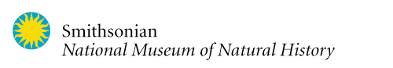
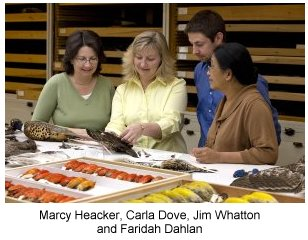
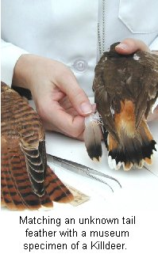
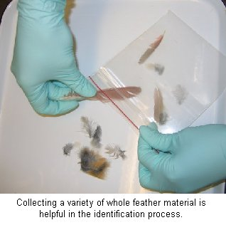
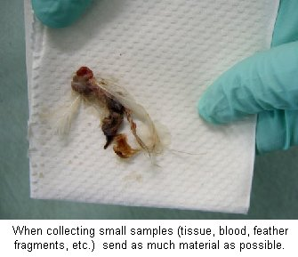

Bird Identification
By:
Marcy
Heacker and Carla J. Dove
Introduction
Identification of bird species involved in bird/aircraft strikes is an important part of the overall assessment and management of this complex issue. Knowing the exact species provides guidance to the size, behavior, and ecology of the bird in question and is key to tracking species trends as well as focusing preventative measures. Species identifications provide the baseline data needed to plan habitat management on airfields, build avoidance programs, and have even been used to assist engineers to design windscreens and engines that are more resilient to birdstrike events.
Reporting every wildlife strike is crucial to the continuing effort of birdstrike prevention. Equally important is to assign an accurate species to each case so the overall data is complete and can be correctly interpreted. Although commercial aviation currently reports about 7,500 strikes per year (Wildlife Strikes to Civil Aircraft in the United States 1990 - 2008, Dolbeer et al.), very few of these cases are associated with a specific identification of the wildlife involved. This article presents an overview of the identification methods used by the Smithsonian Institution's Feather Identification Lab - as well as links and recommendations for reporting, collecting, and shipping birdstrike material.
Show Low (AZ) Duck Strike
November 5, 2009
(Click each picture to enlarge)
The Smithsonian Institutions Feather Identification Lab
Based on the work of Roxie Laybourne, the SI Feather ID Lab is a highly specialized  lab that currently process over 3,000 cases a year for bird species identification from whole and fragmentary feather material. Funding for the lab is supported by interagency agreements between the Smithsonian Institution, U.S. Air Force, U.S. Navy, and the Federal Aviation Administration.
The
lab is housed in one of the world's best museum collections of birds at
the
National Museum of Natural History in
Methods Used to Identify Birdstrike Remains
 While each case is different, we approach the identification of birdstrike remains based on what kind of material is available. If there is a whole bird or partial carcass, identifications can be based on physical characters traditionally used when viewing birds in the wild - including size, color, and pattern. Wings, feathers, feet, and beaks can then be compared with the bird specimens in the SI museum collection to make a final identification. This approach is also applied when samples only include loose or fragmented feathers.
Often there is very little material recovered from a birdstrike. Identification of samples consisting of small feather fragments, blood, and/or tissue can be examined in a couple of ways. The microscopic features of the downy part of a feather are unique for different groups of birds (ex. duck, raptor, or passerine). Looking at this fluffy area of the feather can provide valuable clues to narrowing down the species identification.
The latest tool in the Feather Lab's identification toolbox is DNA analysis. Using molecular techniques to analyze minute birdstrike remains is an important new advancement in the lab's ability to identify birds from blood and tissue samples. After extracting, amplifying (pcr), and sequencing the sample, the DNA sequence is compared with an online reference database of mitochondrial sequences known as the Barcode of Life Data Systems
Many times samples are examined using more than one of these ID methods. The combination of examination results, reference comparison, and consideration of the case details (such as date and location) leads us to the most confident species identification possible.
Collecting Remains
Because the type of remains is never the same, the best way to approach collecting birdstrike remains depends on what kind of material is available. The following is a breakdown of how to collect material for species identification for each of these types of remains.
WHOLE / PARTIAL BIRD: Many times, a whole bird is found on the airfield. In these cases, pluck a variety of feathers (breast, back, wing, and tail) and place in a re-sealable plastic bag. The remaining carcass can be properly discarded. Feet, whole wings, or beaks can also be helpful if they can be removed from the whole carcass. If only part of the bird is available, collect the best variety of feathers possible; particularly feathers with obvious color or pattern. If the remains are moist or fleshy, allow them to dry and wrap them in paper before placing in re-sealable plastic bag and/or double bag them. Tyvek ® mailing envelopes also work well.
FEATHER FRAGMENTS / TISSUE / BLOOD:
Similar to feather fragment material, the
best
thing to
do for a blood smear or tissue ("snarge") is to send ALL of the
material. Paper
towels, gauze pads, alcohol wipes work well for collecting this type of
material. If the area is dry it is
best to moisten the material with a spray of 70% alcohol. Again, place
everything in a re-sealable plastic bag to ship to the lab. Our DNA
work has
found that dry material or material soaked in alcohol give the best
results -
water encourages nasty molds and fungus that degrade DNA. If you
routinely
send blood/tissue swipes, you may want to contact the Feather Lab to
see if FTA ®
dna collecting cards are a good option
for you.
When sending birdstrike remains to the lab
for
identification, please include a completed
FAA
5200-7 form
and contact
information.
Regular Shipment : Overnight / Priority Shipment:
Smithsonian Institution Smithsonian Institution
Feather Identification Lab Feather Identification Lab
E-600, MRC 116 E-600, MRC 116
P.O. Box 37012 10th &
Washington, DC 20013-7012
Proper reporting is a very important step in the overall process of birdstrike identification. Complete and accurate case reports not only make the identification and notification process more efficient, but are also the basis of gathering data, interpreting results, and ultimately implementing the knowledge obtained from the birdstrike reporting process. Your reports and IDs count!
Contact Information and Handout
Feather
Identification Lab: (202) 633-0801
Marcy
Heacker
heackerm@si.edu
Important Reminder
The Feather Identification Lab encourages field personnel to practice good hygiene when working with birdstrike material. Wearing latex gloves, eye/face protection, and thoroughly washing hands are all simple precautions that can help increase health safety. Additionally, we recommend being familiar with your airfields protocols for proper carcass disposal. Always follow the safety guidance provided by your own agency or organization